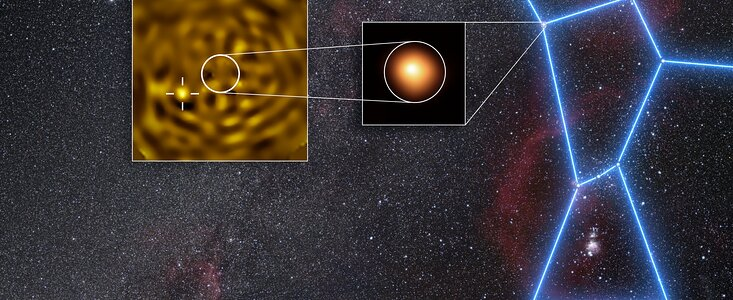

By Nirmal Nadar | Published 15-8-2026
"At long last, astronomers have firm evidence that Betelgeuse, one of the most famous stars in the night sky, is not alone."

We have shown that Betelgeuse is not single, it is accompanied by a faint stellar companion,” says Montargès, astronomer at the Observatoire de Paris - PSL, France, and lead author of the study published today in Astronomy & Astrophysics. Betelgeuse — a reddish star in the Orion constellation that is easily visible with the naked eye and is known to change in brightness — has been observed for millennia. But it still surprises astronomers.
The discovery of this new evidence of Betelgeuse B follows two papers published in 2024 that suggested this elusive stellar companion would be at its furthest from Betelgeuse A in December of that year. With that clue in hand, Montargès and colleagues set about hunting it. "Honestly, I thought we did not have the sensitivity to detect Betelgeuse B as it was predicted," Montargès said. "Because it is more massive than predicted, we see it!"
gravity literally holding galaxies together and outweighing ordinary matter by around five to one, it remains effectively invisible because it doesn't interact with light and it simply ghosts through ordinary matter. "Understanding dark matter would represent a profound advance in humanity's knowledge of the cosmos and what it is made of," team member Yu-Dai Tsai of the University of Sheffield said in a statement. "Our research gives physicists clear new targets in the search for dark matter, while connecting two of the biggest ideas in fundamental physics: the mystery of dark matter and the existence of hidden dimensions." Dark photons play dark matter like a violin Though the main idea is that dark matter may operate in the fifth dimension, this new research expands upon that concept with another theory. It suggests that dark matter exists with another inhabitant of the fifth dimension, a force-carrying particle called a "dark photon." Standard photons are the constituent particles of electromagnetic radiation, or light; dark photons would be similar but for a hypothetical "dark force." The team's new proposal would see the unique geometry of the fifth dimension causing the masses of dark matter particles to form an arrangement that gives rise to a "dark matter resonance." This is akin to the intense vibration of a musical instrument at certain notes.